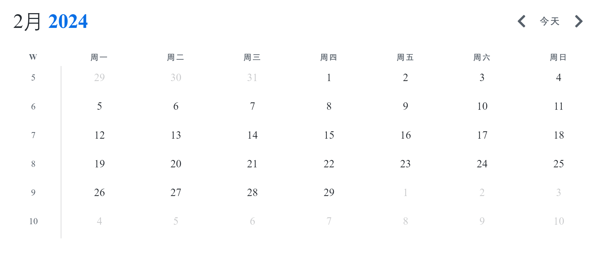
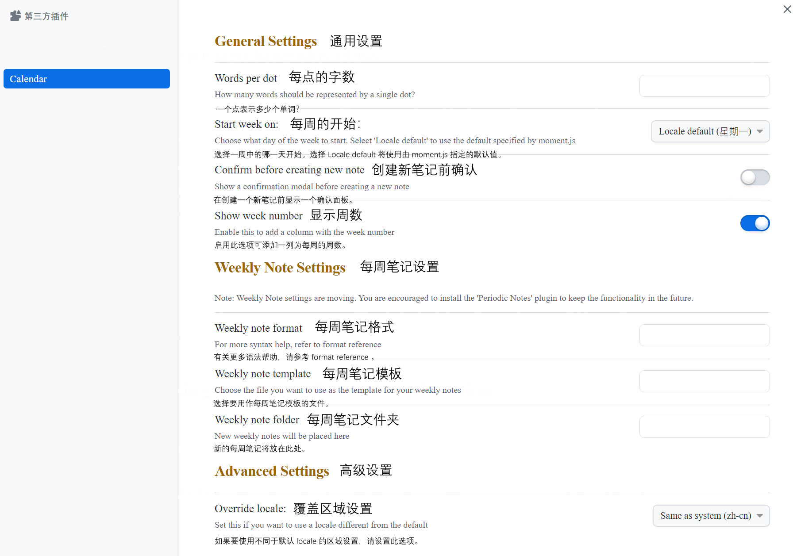

Obsidian Plugin - Calendar
更多信息在 https://github.com/liamcain/obsidian-calendar-plugin/blob/master/README.md 。
该插件创建了一个简单的日历视图，用于在日常笔记之间可视化和导航。
在设置菜单中启用插件之后，您应该会看到日历视图出现在右侧工具条中。该插件读取您的每日笔记设置，以了解您的日期格式，您的每日笔记模板的位置，以及它创建的新的每日笔记的位置。
Start week on [default: locale]: 将 Calendar 视图配置为将星期日或星期一显示为一周的第一天。选择 locale 会将开始日期设置为所选区域设置的默认值（设置 > 关于 > 语言）。
Words per Dot [default: 250]: 从 1.3 版本开始，点反映文件的单词计数。默认情况下，每个点代表 250 个单词，您可以将该值更改为任何您想要的。将此设置为 0 可完全禁用单词计数。注意: 最多有 5 个点，所以视图不会变得太大！
Confirm before creating new note [default: on]: 如果你不喜欢在创建新的每日便笺之前有一个模态提示，你可以关闭它。
Show Week Number [default: off]: 启用此选项可以在日历视图中添加一个新列，显示 Week Number。点击这些单元格将打开你的每周笔记。
本博客所有文章除特别声明外，均采用 CC BY-NC-SA 4.0 许可协议。
相关推荐

评论